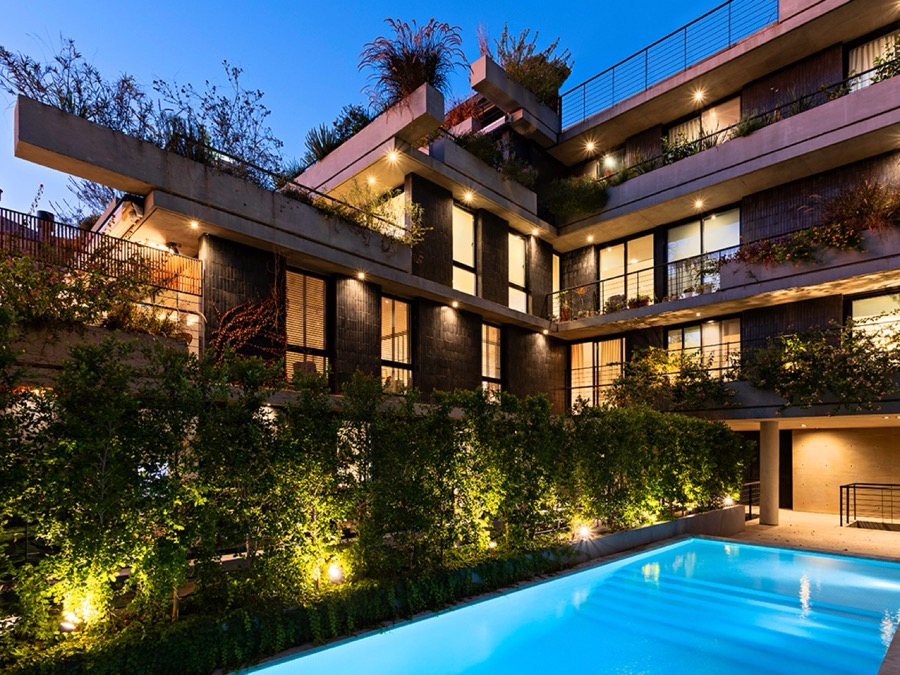

Hauston:
Real Estate Web Experience
Designing and building the digital presence for a premium real estate developer with high-end residential projects across Buenos Aires.

7
Premium real estate developments featured on the platform
CABA
Buenos Aires City: Nuñez, Palermo, Recoleta, Belgrano
Live
Deployed and operational at hauston.com.ar
Context
A premium real estate developer needing a digital home
Hauston is a Buenos Aires based real estate developer specializing in premium residential projects across sought-after neighborhoods like Nuñez, Palermo, Recoleta, and Belgrano. Operating alongside prestigious architecture studios, they deliver spaces defined by aesthetic quality, versatility, and modern design.
The objective was to construct a complete digital presence that communicates their portfolio, positions them as a top tier developer, and provides potential buyers and investors with a frictionless path to connect.
My role
End to end UX, visual design, and development
I owned the project from conceptualization through to live deployment, executing the full project lifecycle:
- Defining the information architecture, sitemap, and navigation models
- Establishing a high-end visual design system tailored to premium market expectations
- Designing individual project pages for 7 developments featuring galleries, specs, and targeted call to actions
- Building the WordPress platform using Elementor, ensuring the client maintains complete content autonomy
- Integrating direct contact paths including WhatsApp conversion hooks to shorten the sales cycle
Key design decisions
Decisions tailored for high-intent investors
Decision 01
Immersive photography and high-impact visual hierarchy
Real estate buyers and investors look for trust signals before reading detailed specs. We prioritized full-bleed hero imagery and high-resolution visual storytelling on every project page, allowing the architectural quality to lead the experience before diving into technical details.
Decision 02
Direct two-click project navigation
To streamline navigation for returning investors and prospective buyers, we engineered a flat information architecture. The primary navigation includes a direct Proyectos dropdown menu, making all 7 developments accessible within two clicks from any page on the site.
Decision 03
Multi-channel conversion paths with instant messaging
We designed frictionless contact touchpoints tailored to local buyer behavior. This included floating WhatsApp integration, dedicated contact forms, and inline project inquiries, ensuring that user intent is never more than one tap away from the sales team.
Final solution
An elegant platform built for client autonomy
The platform deployed at hauston.com.ar presents the full portfolio of residential developments across prime Buenos Aires locations. The custom WordPress architecture empowers internal teams to manage content, upload new render galleries, and update project availability independently without ongoing developer dependencies.
Outcome
A digital presence matching physical architectural quality
Hauston now operates a digital platform that mirrors the high quality of their physical real estate projects. The combination of clean sans-serif typography, dark visual themes, scannable specifications, and low-friction conversion paths delivers a sophisticated experience optimized for investor trust and lead generation.
Reflection
What this reinforced
Designing for premium B2C and real estate audiences requires balancing visual elegance with conversion efficiency. The success of this project relied on establishing trust through photography and clean typography while keeping contact paths short, actionable, and effortless for potential buyers.